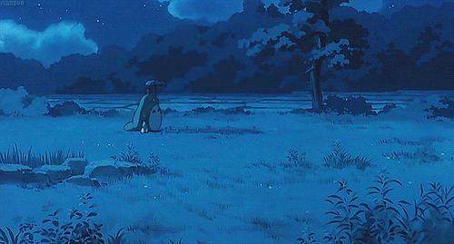

Studio Ghibli : Un Monde de Magie et d'Émotion
Studio Ghibli : Un Monde de Magie et d'Émotion
Le Studio Ghibli, fondé en 1985 par les visionnaires cinéastes Hayao Miyazaki et Isao Takahata, est une pépite cinématographique qui a su captiver le cœur du public du monde entier. Basé au Japon, le studio est reconnu pour ses œuvres d'animation exceptionnelles, mêlant habilement la magie des contes fantastiques à des récits profonds et émotionnels.
Les films du Studio Ghibli transcendent les frontières culturelles et linguistiques, offrant des expériences cinématographiques uniques et intemporelles. Chaque création du studio est une immersion dans un univers envoûtant, où des personnages attachants naviguent à travers des paysages à couper le souffle, portant des messages poignants sur l'amour, la nature, et la force intérieure.
Que ce soit à travers les aventures épiques de "Princesse Mononoké", les rêves magiques de "Mon Voisin Totoro" ou les voyages oniriques de "Le Voyage de Chihiro", les films du Studio Ghibli transcendent le simple divertissement pour devenir des œuvres d'art cinématographiques célébrées pour leur beauté visuelle et leur profondeur émotionnelle.
Le Studio Ghibli continue d'inspirer les générations avec sa créativité sans bornes, sa narration captivante, et sa capacité à toucher le cœur de chacun. Chaque film est une invitation à plonger dans un monde empreint de magie, de réflexion, et d'une dose infinie d'âme. Dans l'univers du Studio Ghibli, l'animation devient une porte ouverte vers l'imagination, où les rêves prennent vie et les émotions deviennent intemporelles.
